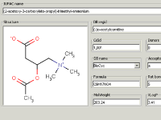
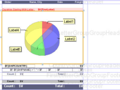
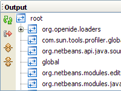
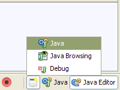

Backward Compatibility Testing the NetBeans Platform 6.1
In March 2008, several NetBeans Community partners have performed a series of backward compatibility tests. Here they show you how to do it, and what we learned from it.
What is Backward Compatibility Testing?
A plugin or application developed with one version of the NetBeans Platform should still work in a newer version — in theory. In practice, developers have to verify that their product is still compatible with every new version of the API.
The Results
Several partners have published their test results on the NetBeans wiki: Petr Zajac tested ChemAxon's desktop application Instant JChem; Anuradha Gunasekara tested several NetBeans plugins, among them the Log Management and the Perspective plugins; Tonny Kohar from KIYUT tested his two desktop applications Citra FX and Sketsa; and Giulio Toffoli tested JasperSoft's iReport plugin.
Citra FX and Sketsa by KIYUT
KIYUT's Citra FX is a digital photo effects editor, and Sketsa is a vector drawing application. Both are based on a set of thirty-four NetBeans Platform 6 modules.
Tonny Kohar reported he could recompile and run both applications as expected. The log files revealed several non-critical warnings. He filed the issue and his report is being investigated.
Evaluation: Citra FX and Sketsa are fully compatible with the NetBeans Platform 6.1. The application's log files revealed two warnings (a menu ordering bug and a missing libX11.so library), but neither represented an incompatibility issue.
Instant JChem by ChemAxon

ChemAxon's Instant JChem is a scientific application for working with chemical structures. It is based on the NetBeans platform 6.0.
For the test, Petr Zajac built the sources against the NetBeans 6.1 Platform which completed with no errors or warnings. No problems occurred while running Instant JChem. To test whether all features still worked correctly, Petr had prepared about 200 automated unit tests, and all of them passed. In the process of the test, Petr submitted a feature request with a patch which was closed in favor of a more generic solution.
Evaluation: Instant JChem is fully compatible with the NetBeans Platform 6.1. The application's log files revealed two warnings (a missing JDBC driver, and a missing libX11.so library), but neither represented an incompatibility issue.
iReport by JasperSoft

JasperSoft's iReport plugin is a visual report generation tool. It was written for NetBeans 6.0.
Giulio Toffoli and JasperSoft's QE department tested the plugin's compatibility with NetBeans IDE 6.1 on Windows and Mac OS. In order to install and use the plugin after API changes that were introduced in NetBeans Platform 6.1, two workarounds were required.
Evaluation: Two incompatibilities were detected and solved.
- The return value of getPath() has changed and required a workaround. In response to Giulio's report, the method was reverted to its original behavior in the NetBeans Platform.
- XMLDataObject has changed so that iReport documents (.jrxml files) were no longer associated with the iReport Designer. This was fixed by a one-line workaround on the client side.
Plugins by Anuradha Gunasekara


Anuradha Gunasekara is the author of the Log Management and the Perspective plugins. Additionally, Anuradha is a member of a development team that is currently working on an ERP system. This system is comprised of 32 custom modules and re-uses functionality from 40 existing NetBeans platform modules.
All of these plugins and modules were written for NetBeans IDE 6.0. Anuradha found no problems during migration.
Evaluation: The ERP system, the Log Management plugin and the Perspective plugin were all compatible with NetBeans IDE 6.1.
Why Share Test Results With the Community?
There are two kinds of incompatibility issues, some are bugs, and some are actually features. If you detect unwanted side-effects after an API change, a good bug report gives the engineers a chance to fix the incompatibility prior to the next release's feature freeze.
Some API changes, however, are justified and will not be undone, even if they cause issues for individual products. In these cases we provide partners with documentation how to work around the change while keeping the same functionality. In either case, the information gained from your test results adds to the quality of the NetBeans Platform for everyone.
Technical community manager Jiri Kovalsky is satisfied with this year's compatibility test initiative. “All involved parties were very pleased when I approached them. [...] Suddenly they could influence [the APIs] before the Code Freeze.” Jiri concludes, “It's a win-win initiative worth repeating with the 6.5 release.”
What is the Testing Process Like?
Testing is not only relevant for NetBeans plugins, but also for desktop applications built on top of the NetBeans Platform. To test a plugin, install it into a newer version of the NetBeans IDE. Desktop applications are tested by compiling them against the newer version of the NetBeans rich-client platform.
Record any warnings or exceptions during the build process from the sources, during linking or installing of binaries, and during execution. To assure the highest level of compatibility, you need an explicit set of tests that checks whether each feature works correctly.
How to Join
You can review all logfiles and more detailed reports on the NB61 Backward Compatibility Testing Report wiki. You can either perform compatibility tests yourself, or the NetBeans testing team can do it for you.
To join the compatibility testing effort, you can get contact info from the BackwardCompatibilityTesting wiki.